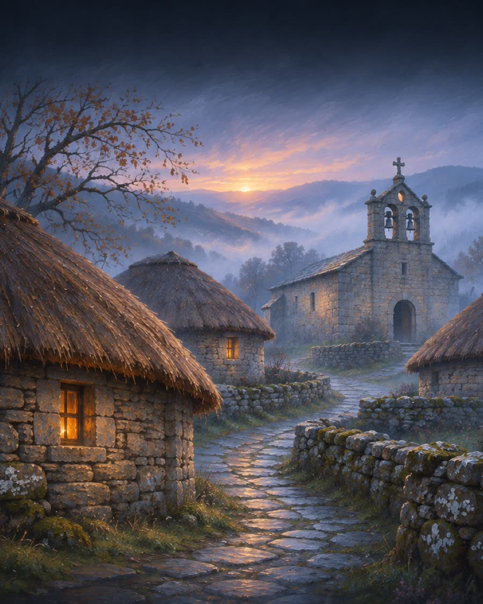
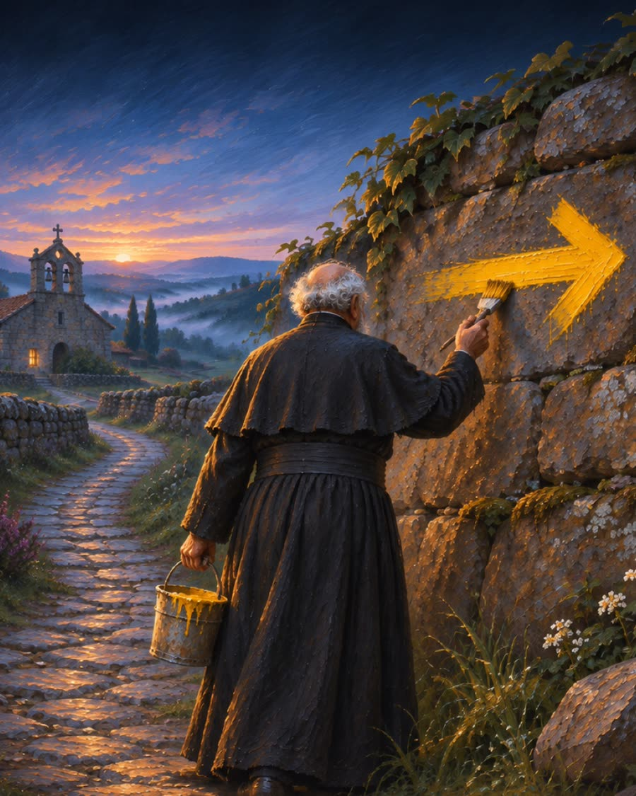
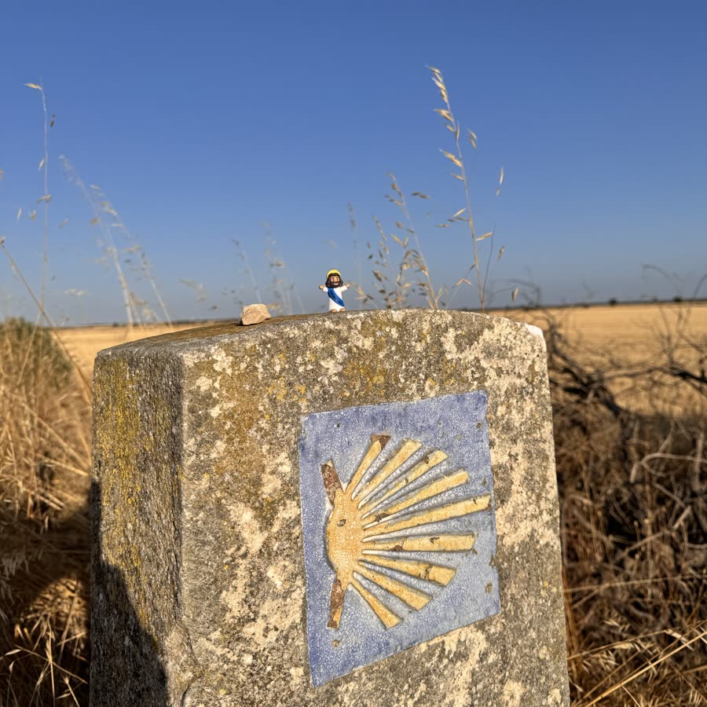
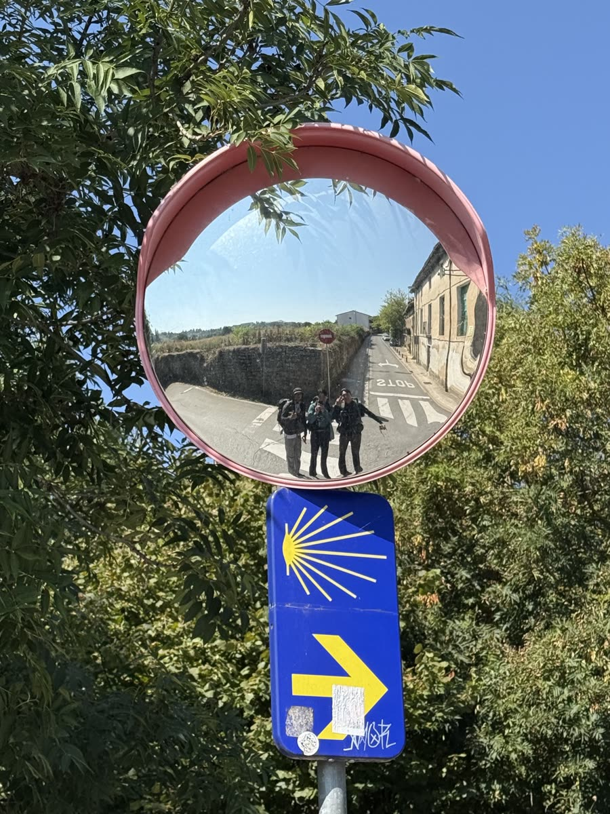
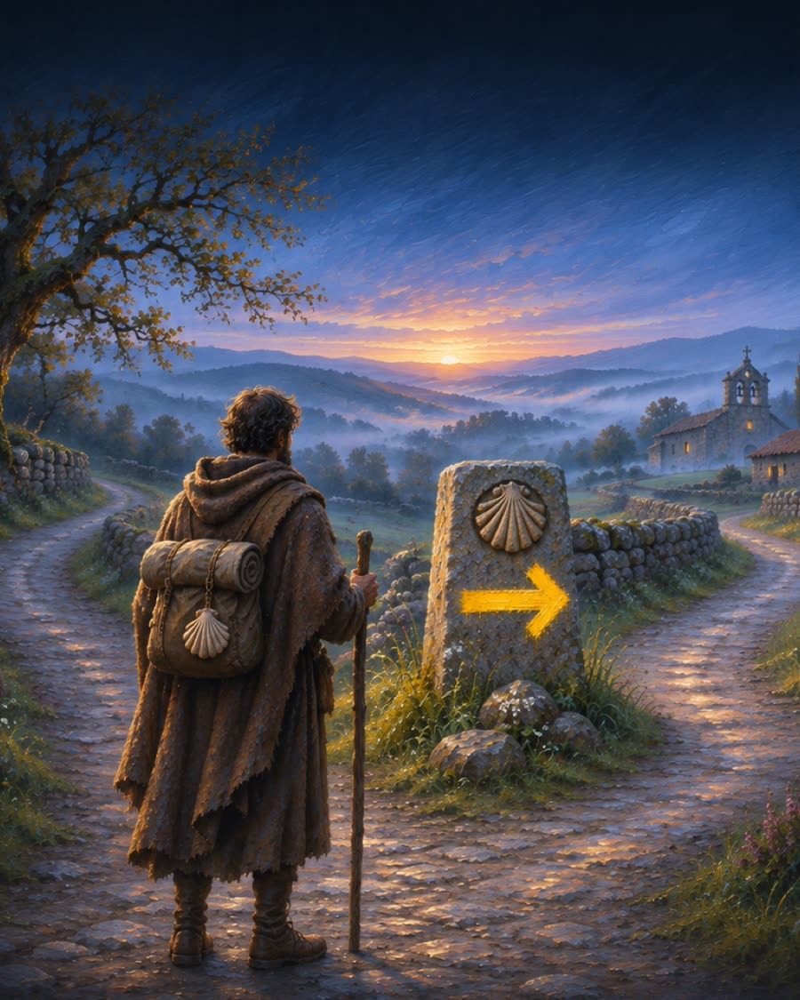

순례자의 한끼한밤
순례자의 한끼한밤
순례길 800km를 안내하는 노란 화살표,
나라가 그린 게 아닙니다.
노란 화살표를 그린 사람
순례길을 걸으면 하루에도 수십 번 노란 화살표를 만납니다. 돌담에, 전봇대에, 길바닥에, 남의 집 벽에도요. 너무 당연하게 있어서 처음엔 나라에서 관리하는 표지인 줄 알았습니다. 그런데 이 화살표의 시작은 산골 마을 신부님 한 분이었어요.
잊혀 가던 길
1980년대 초만 해도 산티아고 순례길은 거의 잊힌 길이었습니다. 걷는 사람이 적으니 길도 흐려지고, 어디로 가야 하는지 알려 주는 표시도 거의 없었죠.

그때 나선 사람이 갈리시아 산골 마을 오 세브레이로의 신부님, 엘리아스 발리냐입니다.
신부님이 노란 페인트를 들고
순례길에 화살표를 그리기 시작한 해.
낡은 차와 남은 페인트
신부님은 낡은 차에 노란 페인트를 싣고 피레네부터 산티아고까지 다니며 화살표를 그렸다고 합니다. 1984년이라는 자료가 많고, 1982년부터라는 자료도 있어요.
왜 하필 노란색이었을까요? 페인트는 도로 공사하고 남은 것을 얻어 썼다는 이야기가 전해집니다. 정확한 기록은 아니지만, 이 길과 잘 어울리는 이야기예요.

"화살표를 잃지 말라"
신부님은 1989년 세상을 떠났습니다. 떠나기 전 친구들에게 화살표를 잃지 말아 달라고 부탁했다고 전해져요. 그 부탁은 지켜졌습니다. 지금은 순례자 단체와 자원봉사자들이 화살표를 새로 칠하며 길을 지키고 있어요.
노란 화살표의 길
- 1980년대 초
순례길은 걷는 사람이 드문, 거의 잊힌 길
- 1984
오 세브레이로의 엘리아스 발리냐 신부가 노란 화살표를 그리기 시작
- 1989
신부님이 세상을 떠나며 "화살표를 잃지 말라"고 부탁
- 지금
한 해 40만 명 넘는 순례자가 이 화살표를 따라 걸음
32일 동안 한 번도
저도 2025년에 프랑스길을 32일 동안 걸었습니다. 그런데 길을 잃은 적이 한 번도 없었어요. 갈림길이 나오면 어김없이 노란 화살표가 있었거든요. 지도를 볼 일이 거의 없었습니다. 걷다가 화살표가 안 보이면 "어? 길 잘못 들었나?" 싶은데, 몇 걸음 더 가면 또 나타나 있었어요.
32일 걷는 동안
길을 잃은 횟수.

화살표는 생긴 것도 가지가지였어요. 돌기둥에 페인트로 쓱 칠한 것, 파란 타일에 노란 가리비를 넣은 표지석, 누가 돌멩이에 직접 그려서 "¡Buen Camino!"라고 적어 올려 둔 것까지요. 표지석 위에는 순례자들이 두고 간 작은 돌이나 인형이 앉아 있기도 했습니다.



메세타를 걷던 날에는 길바닥에 돌멩이를 모아 만든 커다란 화살표도 만났어요. 누가 언제 만들었는지는 몰라도, 뒤에 오는 사람이 헷갈리지 말라고 하나하나 주워 놓았겠죠.
마을에 들어서면 화살표가 표지판이 되기도 해요. 길모퉁이 거울 아래에도 가리비와 화살표가 붙어 있었어요. 거울에 비친 우리 모습까지 같이 찍혔네요. 사실 길에 페인트로 그린 화살표가 훨씬 많았는데, 너무 흔해서 정작 사진은 몇 장 안 남았습니다.


그래서 순례자들은 오늘도,
신부님이 그린 화살표를 따라 걷습니다.
🇬🇧 For pilgrims passing by
The yellow arrows that guide pilgrims along the Camino were not painted by the government. In the early 1980s the Way was almost forgotten. Elías Valiña, the parish priest of O Cebreiro in Galicia, loaded yellow paint into his old car and painted arrows from the Pyrenees to Santiago, starting around 1984 (some sources say 1982). It is said the paint was leftover from road works. Before he died in 1989 he asked his friends not to lose the arrows, and they kept that promise. Today more than 400,000 pilgrims a year follow them. I walked for 32 days in 2025 and never once got lost.
📚 참고한 자료
- 사진: 2025년 프랑스길에서 직접 찍은 것
- Vive Camino, Pilgrimaps, CaminoWays: 엘리아스 발리냐 신부와 노란 화살표 이야기
- 시작 연도는 1984년이라는 자료가 많고 1982년이라는 자료도 있습니다
- 도로 공사 페인트, "화살표를 잃지 말라"는 부탁은 전해지는 이야기로 적었습니다
- 순례자 수: 산티아고 순례자 사무소 증명서 발급 2023년 약 44만 6천 명, 2024년 약 49만 9천 명
- 32일·길 잃은 횟수: 2025년 제 순례길 경험
🍽️ 한끼한밤 이야기
🕯️ 오늘 밤 이야기는 여기까지.
다음 이야기는 일본 튀김 이름 속에 숨은 포르투갈, 덴푸라입니다.